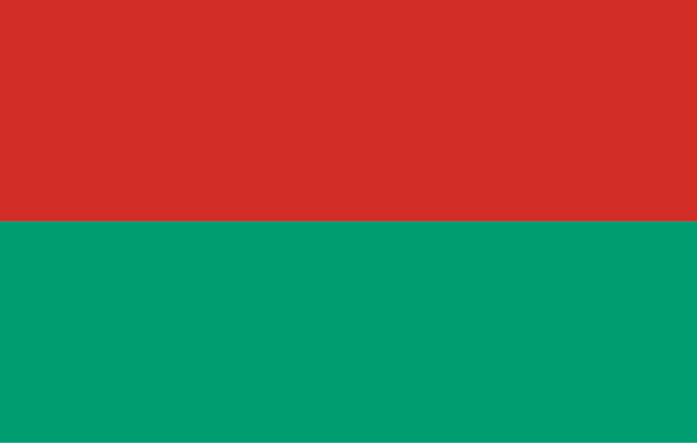
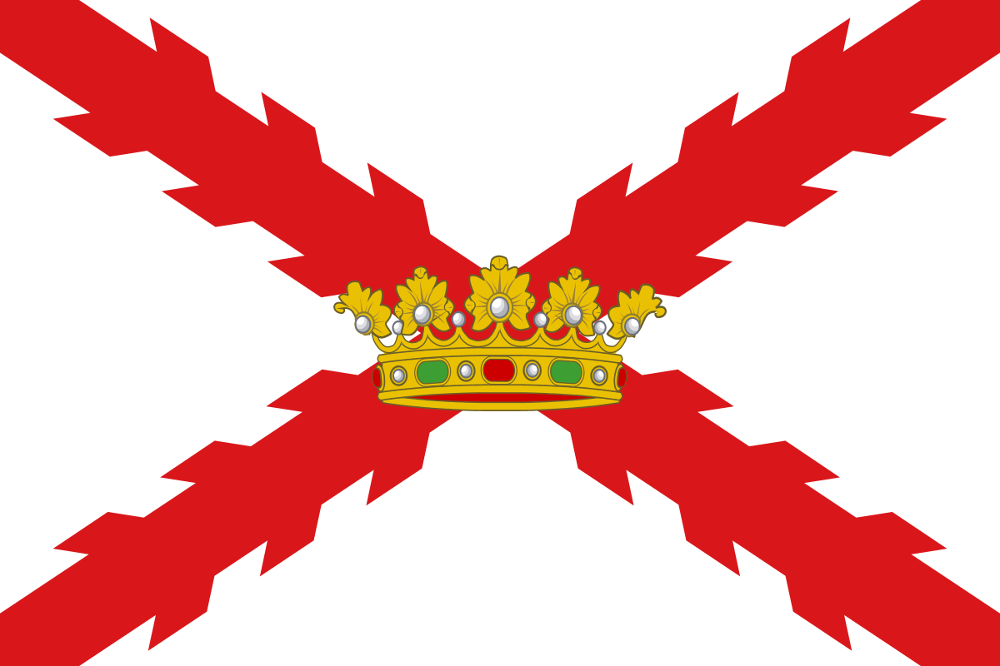
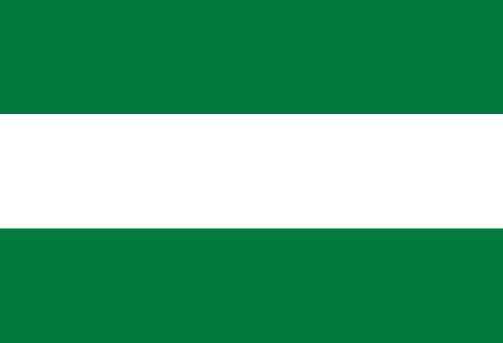
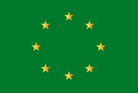
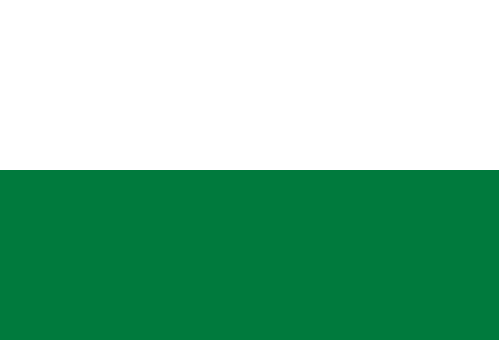

Turismo en Bolivia
La Paz
- Copacabana: Principal destino de peregrinación en Bolivia. Miles van caminando. Actividades: Misas en el Santuario, procesiones, subida al Cerro Calvario para el Vía Crucis.
- Ciudad de La Paz: Visita a las 7 iglesias (San Francisco, Catedral Metropolitana, Santo Domingo, etc.), procesiones solemnes (especialmente la del Santo Sepulcro el Viernes Santo), ferias de pescado.
- Lago Titicaca (otras zonas): Comunidades como la Isla del Sol pueden ser visitadas para un retiro más tranquilo.
- Zona Sur/Alrededores: Algunos buscan paisajes naturales para reflexión (Valle de las Ánimas, Palca).

Oruro
- Ciudad de Oruro: Visita a iglesias como la del Socavón (aunque más ligada al Carnaval, es un centro religioso importante), la Catedral. Procesiones y Vía Crucis.
- Santuarios Provinciales: Algunos santuarios en pueblos cercanos pueden tener celebraciones locales.
Potosi
- Ciudad de Potosí: Visita a sus imponentes iglesias coloniales (San Lorenzo, San Francisco, La Compañía), procesiones solemnes por las calles históricas.
- Toro Toro (Parque Nacional): Destino de naturaleza muy visitado durante el feriado largo, aunque no por motivos religiosos directos.
- Santuarios Menores: En provincias puede haber celebraciones locales importantes.
Cochabamba
- Ciudad de Cochabamba: Visita a iglesias (Catedral, San Francisco, Santo Domingo), procesiones. Subida al Cristo de la Concordia para reflexión.
- Valle Alto (Tarata, Cliza, Punata): Pueblos con iglesias coloniales y tradiciones propias, a menudo más conservadoras.
- Villa Tunari (Chapare): Destino de naturaleza muy popular en el feriado, para descanso y aventura.
Chuquisaca
- Sucre: Es uno de los principales destinos para vivir la Semana Santa tradicional. Visita a sus numerosas iglesias históricas (Catedral, San Felipe Neri, La Recoleta, San Francisco), procesiones muy solemnes y concurridas por el centro colonial.
- Tarabuco: Famoso por su mercado dominical y la fiesta del Pujllay (marzo), pero en Semana Santa se pueden apreciar tradiciones locales en su iglesia.

Tarija
- Ciudad de Tarija: Visita a la Catedral, Iglesia de San Roque, San Francisco. Procesiones muy concurridas y con características propias.
- Santuario de Chaguaya: Aunque su fiesta principal es en agosto, es un importante centro de peregrinación regional.
- Valle de la Concepción: Ruta del vino, visitada también por el paisaje y descanso.
Santa Cruz
- Misiones Jesuíticas (Chiquitania): San Javier, Concepción, San Ignacio, etc. Son el principal atractivo religioso y cultural. Misas en iglesias barrocas, procesiones, a veces conciertos de música barroca.
- Ciudad de Santa Cruz de la Sierra: Visita a la Catedral Basílica Menor de San Lorenzo, iglesias como San Andrés, San Roque. Procesiones.
- Samaipata / Roboré / Aguas Calientes: Destinos de naturaleza y descanso muy visitados en el feriado.

Beni
- Trinidad: Celebraciones en la Catedral, procesiones locales.
- Misiones del Beni (San Ignacio de Moxos, San Borja): Tienen sus propias celebraciones con sincretismo entre lo católico y las culturas mojeñas.
- Rurrenabaque: Principalmente destino de ecoturismo, pero visitado en el feriado.

Pando
- Cobija: Celebraciones en la iglesia principal, procesiones locales.
- Turismo de Naturaleza: Aprovechando la selva amazónica, aunque menos desarrollado que en Beni.
